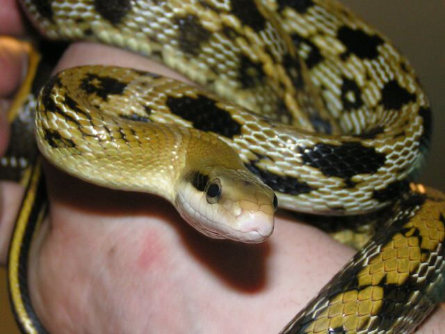
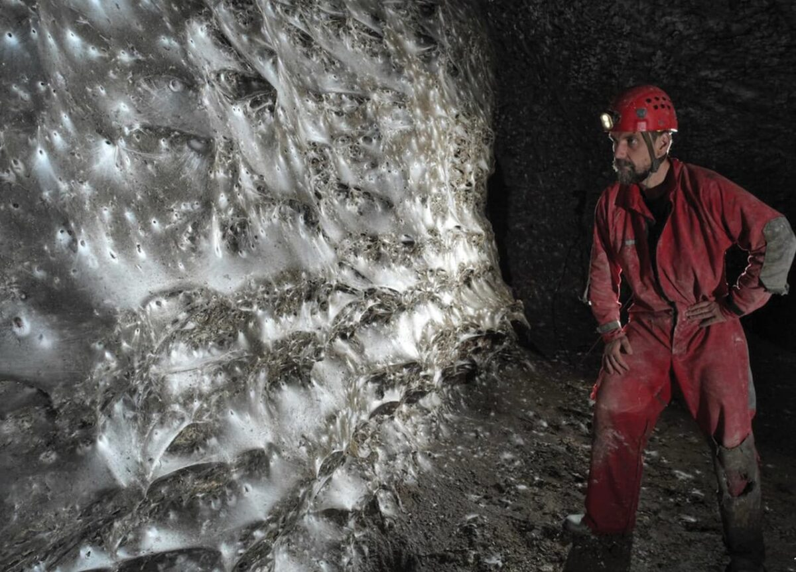
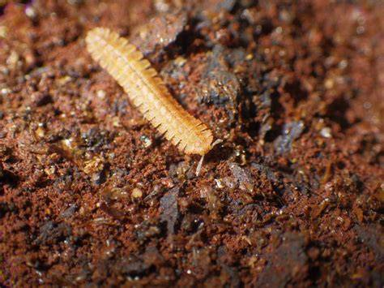

Troglophiles
The term troglophile refers to organisms that are able to live their entire life in a cave. This includes various cave-dwelling animals, such as certain insects and small mammals, which have adapted to life in dark, isolated environments. Troglophiles can either live entirely inside the cave or preferentially spend time there, making them distinct from other cave-dwelling species that may leave the cave occasionally for food or other reasons.

The beauty rat snake (Elaphe taeniura), also called the beauty ratsnake,
the beauty snake, or the cave racer, is a species of snake in the family Colubridae.
The species is native to the eastern and southeastern regions of Asia.

The colonial spider web in Sulfur Cave, is home to a mixed colony of Tegenaria domestica
and Prinerigone vagans. The swarm of adult chironomids is visible near the cave stream.

Millipedes (originating from the Latin mille, "thousand", and pes, "foot")
are a group of arthropods that are characterised by having two pairs of
jointed legs on most body segments; they are known scientifically
as the class Diplopoda.